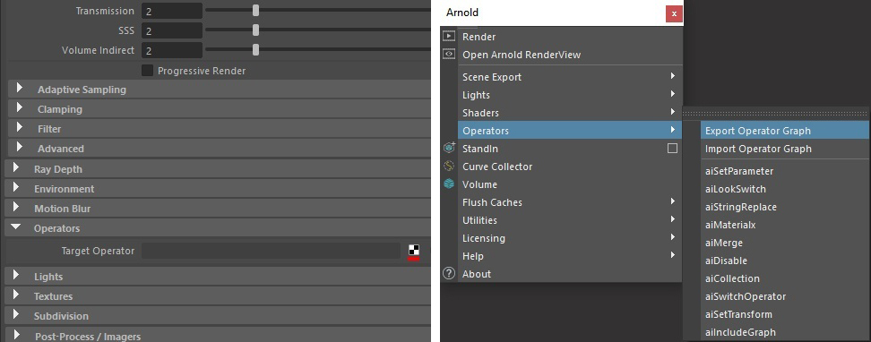

运算符
| 延伸阅读 |
|---|
| 请参见《Arnold 用户手册》中的运算符。 |
| 《Arnold for Maya 用户手册》介绍了如何在 Maya 用户界面中设置 Arnold 运算符。《Arnold 用户手册》提供了有关 Arnold 着色器和着色器参数的完整文档。例如，《Arnold 用户手册》包含有关运算符选择表达式的所有信息。 |
“节点编辑器”(Node Editor)中的运算符图表
通过运算符， 高级用户可以覆盖 Arnold 场景的任何部分并在渲染时修改 Arnold 领域。最常见的用例之一可能就是覆盖程序 （例如 ASS 或 Alembic ）内的参数（例如着色器）。要实现此目的，您必须知道在程序内定义的 Arnold 节点和参数名称。
注意：
有关运算符的教程，请单击此处。

可以在渲染设置(Render Settings)、Arnold 菜单或“节点编辑器”(Node Editor)窗口中创建运算符
以下运算符可用：
- 集合(Collection)
- 禁用(Disable)
- 包含图表(Include Graph)
- 外观切换(Look Switch)
- Materialx
- 合并(Merge)
- 设置参数(Set Parameter)
- 设置变换(Set Transform)
- 字符串替换(String Replace)
- Switch 运算符(Switch Operator)
示例
图 1：从较大集合创建自定义集合
图 2：定义应当排除的树集合
图 3：使用图 2 中的排除集合创建较小集合
- 有关使用 MaterialX 和运算符的教程，请单击此处。
- 可以使用导出选定的着色器(Export Selected Shaders)导出 .mtlx 文件。
设置参数(Set Parameter) 
替代对象示例

使用 set_parameter 将着色器“green”从替代对象指定给场景中的对象
在此示例中，我们需要将程序（替代对象 Maya/C4D）内使用的着色器指定给场景中的对象。在程序中，名为“green”的着色器适用于 ass 文件内对象的覆盖，因为此“green”着色器位于同一程序中。程序中使用着色器的完整路径，以便同时适用于 ass 文件和场景中的形状：
shader = "^/obj/arnold_procedural1/procedural^green" 通过设置 Arnold 参数中 Arnold 程序对象节点上的名称空间参数（例如，设置为 foo），可以选择程序的名称空间。然后，您可以使用以下着色器覆盖，它具有相同的效果，但更为直观。
shader = "^foo^green" 将“green”着色器从程序指定给场景中的立方体
设置变换(Set Transform)
使用 set_transform 调整比例
要下载上面的示例场景文件，请单击此处。
字符串替换(String Replace)
注意：
有关如何使用 string_replace 运算符的教程，请单击此处。
Switch 运算符(Switch Operator)
单击此处观看有关如何使用 switch 运算符在资源的不同外观之间切换的视频示例，其中每个外观由独立的运算符创建。